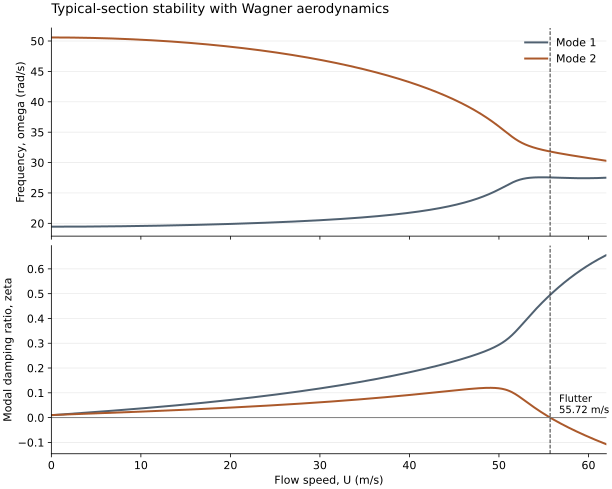

1. From Equations of Motion to State Space
앞의 두 글에서 구조 운동과 공기력 모델을 정했다. 이제 필요한 것은 한 속도에서의 큰 응답값이 아니라, 속도를 높일 때 작은 교란이 감쇠하는지 성장하는지 판단하는 방법이다. 일정한 마다 평형 상태를 정하고 그 주변의 선형 시스템을 구성하면 이 문제를 고유치로 바꿀 수 있다. 여기서는 영 받음각 평형 주변의 두 자유도 Typical section을 사용한다.
우선 (7.2.4)의 가속도 항을 구조 쪽으로 옮긴다. 라 두면 유효 질량행렬은
에는 주변 유체의 가속도 효과가 포함된다. 따라서 이 모델에서 으로 두어도 유체 밀도가 남아 있으면 진공의 구조 고유주파수와 정확히 같을 필요가 없다. 구조 모델 자체의 검산은 인 경우와 분리하여 수행해야 한다.
나머지 공기력은 형태로 모을 수 있다. , 이며, , 로 두면 Wagner model에서
첫 두 식의 는 Wagner model의 순간 Circulatory response이다. 나머지 기여는 공력 상태를 통해 전달된다. Quasi-steady model에서는 이 를 로 바꾸고 를 제거한다. 이때도 가 포함된 Noncirculatory 항은 유지한다.
공력 상태식의 계수를 로 모으고, 로 정의하면
의 번째 행은 , 의 번째 행은 이며, 이다. 식의 역행렬 기호는 수학적 표현이다. 실제 계산에서는 역행렬을 직접 만들기보다 선형 연립방정식을 푼다.
2. Complex Eigenvalues and the Flutter Boundary
한 속도에서 를 대입하면 를 얻는다. 고유치를 로 쓰면 가 진폭 포락선을 정하고 가 진동의 각주파수를 정한다. 이면 감쇠, 이면 성장이다.
복소 고유치에 대응하는 감쇠비는
앞의 1자유도 Damping ratio와 같은 해석을 유지하므로, 여기서는 양의 가 안정, 음의 가 불안정이다. 결과 그래프에서 나 Damping이라는 이름을 사용하더라도 정의에 따라 부호가 다를 수 있으므로, 먼저 고유치의 실수부와 연결해야 한다.
낮은 속도에서 안정한 시스템을 출발점으로 하면 Flutter onset은 복소 고유치 쌍이 허수축을 통과하는 첫 번째 진동 불안정 경계이다.
수치적으로는 안정한 속도와 불안정한 속도로 경계를 감싼 뒤 속도 간격을 줄이거나 Root finding을 수행한다. 동시에 실수 고유치도 확인해야 한다. 실수 고유치가 원점을 통과하는 경계를 무시하면 Divergence를 놓칠 수 있다. 주파수 두 개가 서로 가까워지는 현상은 결합의 단서가 될 수 있지만, 주파수 일치 자체를 모든 Flutter의 판정 조건으로 삼을 수는 없다.
속도별 고유치를 단순히 주파수 순서로 정렬하면 Mode가 가까워지는 구간에서 서로 뒤바뀔 수 있다. 앞 속도의 고유벡터와 현재 고유벡터의 상관성, 고유치의 연속성을 함께 사용하여 같은 가지를 추적한다. 이 예시의 코드는 구조 변위 성분에 질량 가중 상관성을 적용하고, 작은 속도 간격에서 가지를 연결한다. 계산되는 여섯 고유치 전체의 실수부도 확인하므로 공력 상태에 관련된 실수 고유치를 버리지 않는다.
3. A Reproducible Typical-Section Example
숫자로 경계의 의미를 확인하기 위해 Span이 인 교육용 Strip을 사용한다. 다음 값은 특정 항공기의 측정값이 아니라, 모델 구성과 안정성 판단을 보여 주기 위해 정한 입력이다. 두 감쇠계수는 각각의 Uncoupled oscillator에 대해 1%의 감쇠비에 해당하며, 결합된 시스템의 모든 Mode가 정확히 1% 감쇠를 가진다는 뜻은 아니다.
| Parameter | Value | Meaning |
|---|---|---|
| Semichord and strip span | ||
| Axis location and density | ||
| Mass and first moment | ||
| Inertia about elastic axis | ||
| Structural stiffness | ||
| Viscous damping |
이 입력에서 , 이며, 질량중심은 Elastic axis 뒤쪽 에 있다. 구조의 Uncoupled frequency는 각각 과 이다. 와 의 양의 정부호성을 확인하고, 에서 까지 속도를 높이며 고유치를 추적한다.

위 그림은 위쪽에 진동 주파수, 아래쪽에 감쇠비를 나타낸다. 점선에서 Mode 2의 감쇠비가 0을 통과한다. 이 글의 계산에서는
를 얻는다. 를 로 읽으면 주파수 해석이 배 달라진다. 에서 불안정한 고유치의 실수부는 약 이다. 따라서 선형 모델의 해당 Mode 진폭은 약 마다 배가 된다. 이것은 작은 교란의 초기 성장률이며, 큰 진폭에서의 최종 운동까지 예측한 결과는 아니다.
같은 구조 입력과 Noncirculatory load를 유지하고 순환만 Quasi-steady로 바꾸면 약 에서 Flutter가 예측된다. Wagner model의 경계에서 이므로, 순환의 시간 지연을 버리는 근사가 이 예시의 결과에 큰 영향을 준다. Quasi-steady model이 언제나 낮은 Flutter speed를 준다는 일반 법칙을 의미하지는 않는다. 비교의 목적은 구조 입력이 같아도 공기력의 위상 모델에 따라 경계가 달라질 수 있음을 확인하는 데 있다.
정적 식 (7.1.4)에 와 를 넣으면 이다. 따라서 이 예시에서는 정적 Divergence에 앞서 Flutter가 발생한다. 정상 상태에서 를 대입하면 Wagner model도 같은 정적 Lift를 회복하므로, 정적 비교와 동적 비교의 기준이 서로 일치한다.
Python 계산 파일, 속도별 고유치와 감쇠비, 경계 계산 결과를 함께 제공한다. Python에 NumPy, SciPy, Matplotlib을 설치하고 python flutter_example.py를 실행하면 결과와 그림을 다시 생성한다. 코드의 변수와 좌표 부호는 본문의 정의를 따른다.
4. Connection to Structural Models and Verification
실제 날개에서는 Typical section 대신 Beam이나 Finite element model을 사용하고, 필요한 구조 Mode를 선택하여 로 축소할 수 있다. 이때 , 와 함께 공기력도 로 투영한다. 앞의 Modal analysis가 공기력과 연결되는 지점이다.
Mode 수를 늘렸을 때 구조 고유주파수만 수렴하는지 확인하는 것으로는 충분하지 않다. Flutter speed와 Flutter frequency 자체의 수렴을 확인해야 한다. 또한 구조·공력 좌표 사이의 전달에서 힘, 모멘트, Virtual work가 일관되는지 살펴야 한다. 이 예시에서는 질량행렬의 물리성, 정상 순환의 회복, 경계 양쪽의 성장률 부호, 정적 경계와 동적 경계의 구분을 계산으로 확인한다.
주파수영역의 비정상 공기력 모델을 사용하는 경우에는 와 계산된 주파수가 일치하도록 반복하는 – 계열 방법도 쓰인다. 여기서 구현한 것은 Wagner 상태를 포함한 시간영역 State-space 고유치 해석이다. 실제 구조에 적용할 때에는 Mach number, 유한 Span의 공기력 분포, 선택한 Mode, 감쇠와 공력 모델의 적용 범위를 함께 정해야 한다.
Reference. 서로 다른 공기력 모델을 같은 Typical section에 연결하는 예시는 BYU FLOW Lab: Aeroelastic Analysis of a Typical Section에서 확인할 수 있다. 본문의 입력값과 수치 결과는 함께 제공한 Python 모델에서 별도로 계산했다.